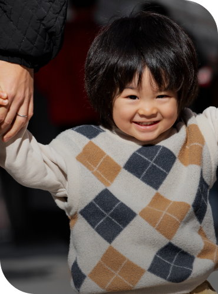
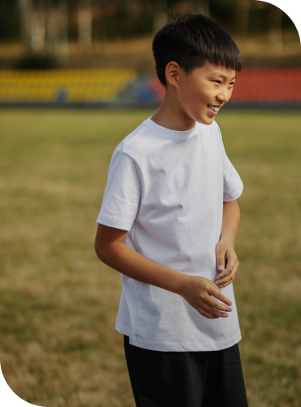
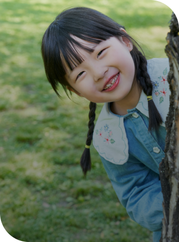
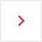
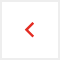
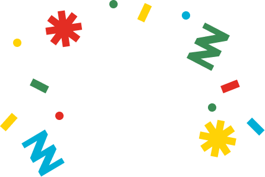
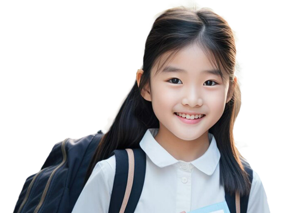
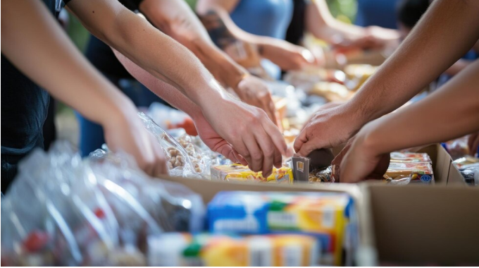

보육원 아이들에게 마음껏 누릴 수 있는 아이다운 일상을 선물해주세요.
영양 섭취가 가장 필요한 생애 첫 1,000일을 지켜주세요.
8주년을 맞이한 행복정류장을 특별한 기부로 축하해주세요.
소중한 후원금은 행복이 필요한 곳으로 전달됩니다. 따뜻한 행복을 보내주세요.
정기후원 일시후원
원
후원하기
작은 행복이 아이들의 마음 한 편에 다녀간 여정의 이야기

01
자라나는 어린왕자 은우
성장 호르몬 주사 치료를 이어갈 수 있게 된 은우의 이야기
긴급생계지원

02
축구 유망주를 꿈꾸는 준수
주변 환경 탓하지 않고 포기 하지 않는 준수의 꿈은 계속 크고 있어요.
보호아동결연

03
웃음꽃이 피어난 지온이네
많은 사랑과 관심으로 지온이 가족에게도 특별한 일상이 생겼어요.
04
훌쩍 커버린 결연 아동
올해 성인이 된 결연아동들과 강원도로 여행을 갔다왔어요.


작은 여정이 남긴 큰 감동


우리를 가장 필요로 하는 곳에서 아이들을 돌보고, 더 나은 내일을 위한 활동에 전념합니다.
01.
우리는 어려운 상황에 처한 아이들에게 실질적인 지원을 아끼지 않고, 아이들이 더 나은 미래를 꿈 꿀 수 있도록 함께 걷고 있습니다.

02.
후원금의 80% 이상을 반드시 아동을 위해 사용한다는 원칙을 지킵니다.
03.